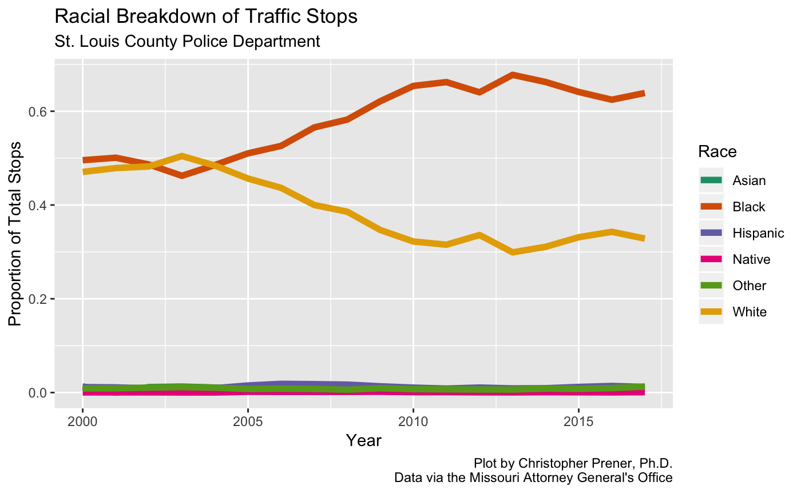

vignettes/movsr.Rmd
movsr.RmdThe Missouri Attorney General’s Office publishes annual vehicle stop reports. These include agency, county, and state level data on traffic stops conducted by police departments in Missouri, and can be used to track disparities in how these departments perform their duties. Unfortunately the data are not published in a machine readable format. Rather, they are published on tables embedded in the AG’s website. movsr provides functions for scraping these tables and reformatting their contents.
The web scraping tool used, RSelenium, performs best when Docker is used for headless browsing. Directions are provided on Docker’s website for both macOS and Windows.
Once Docker is installed, a headless browser needs to be pulled and set-up. The selenium project provides a number of options, but Firefox appears to be the best:
In order to download tables from the AG’s website, we use Docker as a “headless browser” to pull up the relevant pages (via RSelenium) on the website and then scrape them using rvest (this happens within the movsr functions).
Once Docker is installed and started, the following bash command can be used to get a headless browser running on macOS:
R to the BrowserWith a headless browser running, the RSelenium package is used to connect to it. First, we need to load the RSelenium package:
Next, we need to instruct RSelenium to connect to the port we’ve opened using Docker using the remoteDriver() function:
Finally, we need to open that connection with remDr$open():
> remDr$open()
[1] "Connecting to remote server"
$acceptInsecureCerts
[1] FALSE
$browserName
[1] "firefox"
$browserVersion
[1] "66.0.3"
$`moz:accessibilityChecks`
[1] FALSE
$`moz:geckodriverVersion`
[1] "0.24.0"
$`moz:headless`
[1] FALSE
$`moz:processID`
[1] 51
$`moz:profile`
[1] "/tmp/rust_mozprofile.Z0YA0KVLIC9G"
$`moz:shutdownTimeout`
[1] 60000
$`moz:useNonSpecCompliantPointerOrigin`
[1] FALSE
$`moz:webdriverClick`
[1] TRUE
$pageLoadStrategy
[1] "normal"
$platformName
[1] "linux"
$platformVersion
[1] "4.9.87-linuxkit-aufs"
$rotatable
[1] FALSE
$setWindowRect
[1] TRUE
$strictFileInteractability
[1] FALSE
$timeouts
$timeouts$implicit
[1] 0
$timeouts$pageLoad
[1] 300000
$timeouts$script
[1] 30000
$unhandledPromptBehavior
[1] "dismiss and notify"
$webdriver.remote.sessionid
[1] "9de4421f-9b2e-41cd-86c5-b26d23d00f0f"
$id
[1] "9de4421f-9b2e-41cd-86c5-b26d23d00f0f"For details on using RSelenium on other operating systems with Docker, see the relevant vignette on the RSelenium package website.
With the connection open, we can begin scraping using movsr functions. For example, if we wanted to pull traffic stop counts for the City of St. Louis, we can use mv_get_agency():
# scrape table
slmpd_stops <- mv_get_agency(browser = remDr, agency = 587, statistic = "Stops", pause = 1)head(slmpd_stops)
#> # A tibble: 6 x 4
#> agency cat year value
#> <chr> <chr> <chr> <int>
#> 1 St. Louis City Asian 2000 148
#> 2 St. Louis City Asian 2001 0
#> 3 St. Louis City Asian 2002 441
#> 4 St. Louis City Asian 2003 412
#> 5 St. Louis City Asian 2004 254
#> 6 St. Louis City Asian 2005 488The mv_get_agency() function returns tidy data in “long” format. The "Stops" data returned are the number of stops conducted for each year by race. To convert these into proportions of the total number of stops, we can use mv_reformat()
# reformat table
slmpd_stops <- mv_reformat(slmpd_stops, statistic = "Stops", format = "prop")
# preview table
head(slmpd_stops)
#> # A tibble: 6 x 4
#> agency year cat value
#> <chr> <chr> <chr> <dbl>
#> 1 St. Louis City 2000 Asian 0.0130
#> 2 St. Louis City 2001 Asian 0
#> 3 St. Louis City 2002 Asian 0.0117
#> 4 St. Louis City 2003 Asian 0.0127
#> 5 St. Louis City 2004 Asian 0.0106
#> 6 St. Louis City 2005 Asian 0.00903Using proportions or percentage values gives us the proper context for understanding if 441 stops of Asian drivers in 2002 is a large or small number relative to the total number of stops made that year.
With a data set of proportions created, we can plot the trends in traffic stops by race using ggplot2:
# load dependencies
library(ggplot2)
library(RColorBrewer)
# create plot
ggplot(data = slmpd_stops, mapping = aes(x = as.numeric(year), y = value, color = cat)) +
geom_line(size = 2) +
scale_colour_brewer(palette = "Dark2", name = "Race") +
labs(
title = "Racial Breakdown of Traffic Stops",
subtitle = "St. Louis County Police Department",
x = "Year",
y = "Proportion of Total Stops",
caption = "Plot by Christopher Prener, Ph.D.\nData via the Missouri Attorney General's Office"
)